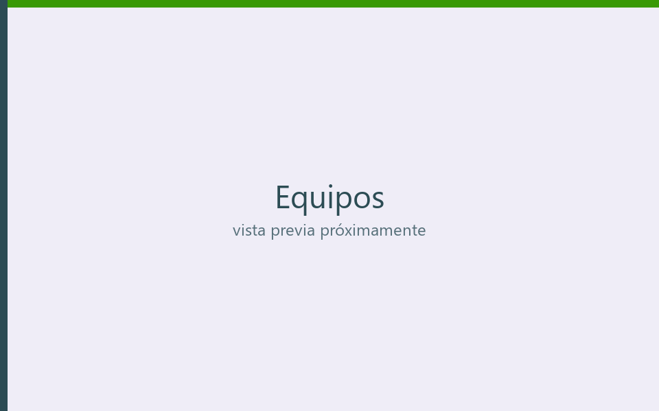
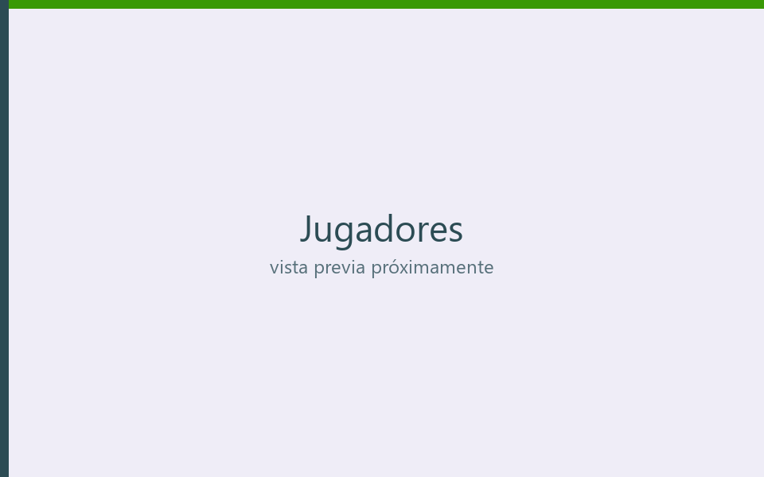

Equipos
Rendimiento, estilo de juego y disciplina a nivel de equipo.
9 gráficas

Jugadores
Producción individual, eficiencia y perfiles ofensivos.
5 gráficas
Datos: FBref (equipos) & Understat (jugadores) · Temporada 2025/2026